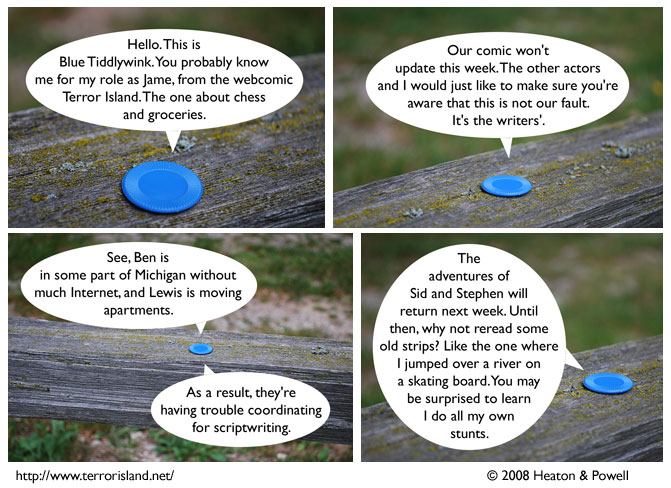

Strip #338
— Monday, August 11, 2008
Yeah, we totally missed an update. SORRY GUYS!
Notes, Thoughts, &c.
Ben’s Notes
Blue Tiddlywink is referring to this strip
Lewis’s Notes
I wanted this strip to be in-canon, but Ben was all “No, Lewis, this is not canon.” Remember, when you have a collaborator, sometimes you have to compromise by not arbitrarily declaring things canon on a whim.